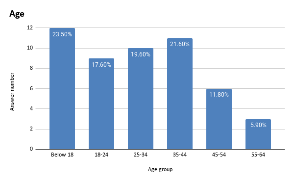

Data
In this survey paper, we examine public awareness of dog financial support and
whether raising the tax on breeding dogs would make people more willing to adopt a
dog.
1.1 Total Sample Size
51 people took our survey.
1.2 Gender
53% of them are female, 47% of them are male.
I chose a Pie chart for this data because it has 2 categories, and I want to show the
total breakdown of gender. (it’s shown on the pie chart)

1.3 Age Distribution
23.5% of them are below 18, 17.6% of them are 18-24, 19.6% of them are 25-34,
21.6% of them are 35-44, 11.8%of them are 45-54, 5.9%of them are 55-64.
I chose a Bar chart for this data because it has 6 categories, and I want to show the
total breakdown of the age group. (it’s shown on the bar graph)
